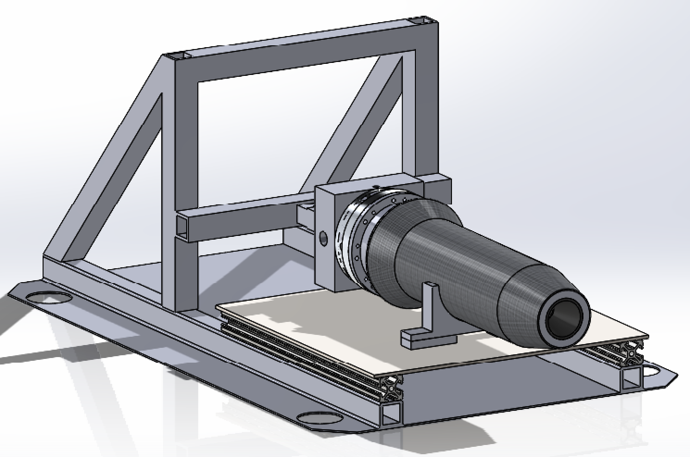
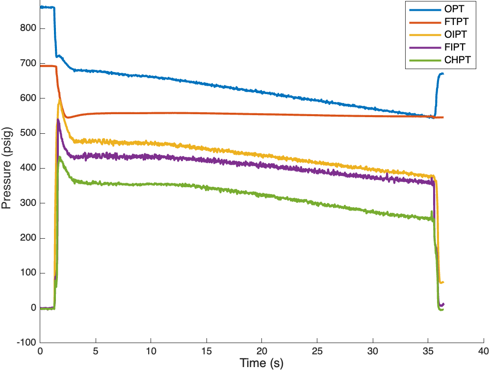

With the Yellow Jacket Space Program (YJSP), I contributed to the manufacturing, test design, testing, and analysis of a composite ablative rocket engine for a nitrous oxide and isopropyl alcohol rocket. My contribution centered on modifying an existing test stand, creating test scripts to give live test results, and supporting with composite layups. Final hot fire testing yielded a successful 34 second burn with steady mass flow rates and 20-40% pressure stiffness across the injector.
In order to reach the Karman line where space begins, our rocket engine needed sustain a 33 second burn without compromising structural integrity. To do this, several engine cooling strategies were considered, such as regenerative cooling and a cooling film before selecting a composite ablative approach for its simplicity and small size. Once designed, this engine had to be tested with cold flows to fix the orifice sizing, then hot fired to ensure the ablation could effectively dissipate heat within the chamber.
To prepare for testing day, I modified the test rig CAD based on the larger engine geometry, then water jetted the new mounting hardware. In parallel, I developed a MATLAB script to give live results as well as post test analysis. The script takes live data from pressure transducers, valve state sensors, thermocouples, and a force transducer, automatically trimming the dataset to a relevant window. Valve timing was analyzed directly from the data to see how long after each main valve was opened the corresponding injector pressure exceedded 10 psi to ensure propellants were flowing as expected. Post test calculations included discharge coefficient (CdA), mass flow rate for both the fuel and oxidizer sides, mixture ratio, thrust, and C* (ideal characteristic velocity) and C* efficiency.
The engine successfully achieved a ~34 second burn, consistently producing 175 lbf of thrust during hot fire testing, exceeding the required burn time. Real time instrumentation and post test analysis validated the expected mass flow rates found theoretically and during cold flow testing. These results confirmed the effectiveness of the ablative design and provided a strong foundation for scaling the engine up.

